Quiénes Somos
La Asociación ACAMURI es una organización comprometida con el desarrollo social y comunitario mediante programas que fortalecen la educación, la participación y el bienestar de las comunidades.
Misión
Promover el desarrollo social mediante programas que mejoren la calidad de vida de las comunidades.
Visión
Ser una organización reconocida por su impacto social y compromiso con el desarrollo comunitario.
Nuevos Proyectos
La Asociación Campesina del Municipio de Riosucio – ACAMURI desarrollará un proyecto de fortalecimiento productivo aprobado por la Agencia de Desarrollo Rural...
Gestión de ACAMURI con la UNP
Contexto
Durante la evaluación de riesgo se identificaron amenazas como homicidios, desplazamientos, reclutamiento de menores, confinamiento, hostigamientos, extorsiones y restricciones a la movilidad, principalmente por la presencia de grupos armados como el ELN y las AGC.
Recomendaciones del CERREM
Se recomendó implementar medidas de protección colectiva como la entrega de 57 celulares para crear una red de comunicación entre los miembros de la asociación y 5 botes con motor para transporte en situaciones de emergencia.
Conclusión de la Gestión
El Estado colombiano debe implementar medidas de protección para la Asociación Campesina de Riosucio frente a los riesgos derivados del conflicto armado y la presencia de grupos ilegales.
Impacto Social
Comunidades beneficiadas
La Nueva
Truando Medio
Truando
Clabellino
Dos bocas
Bocas de Taparal
Pavas
Proyectos productivo
3
Galería
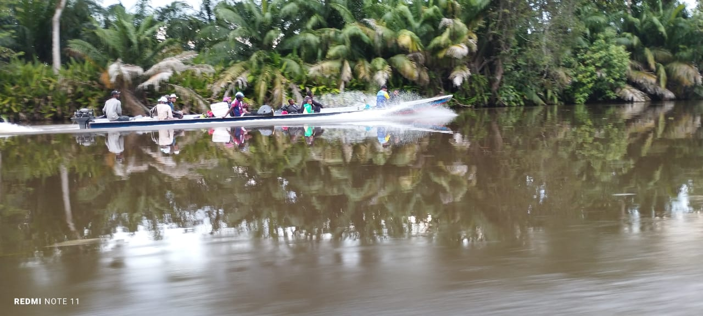
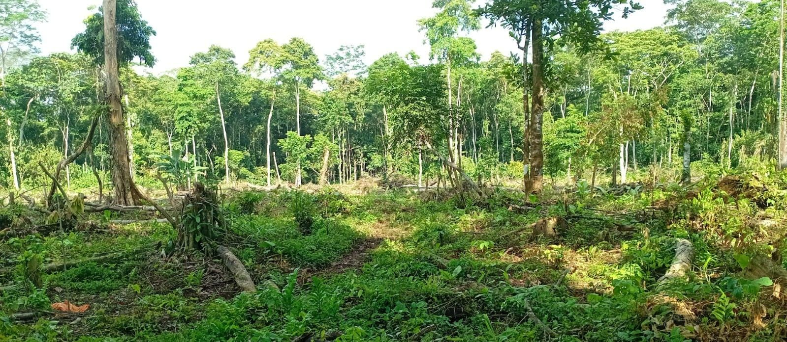
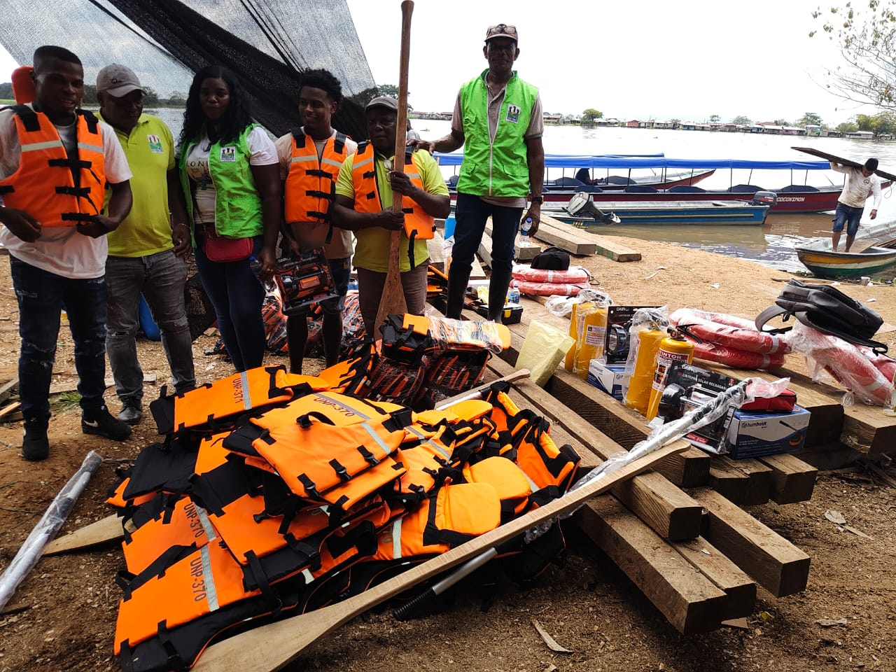
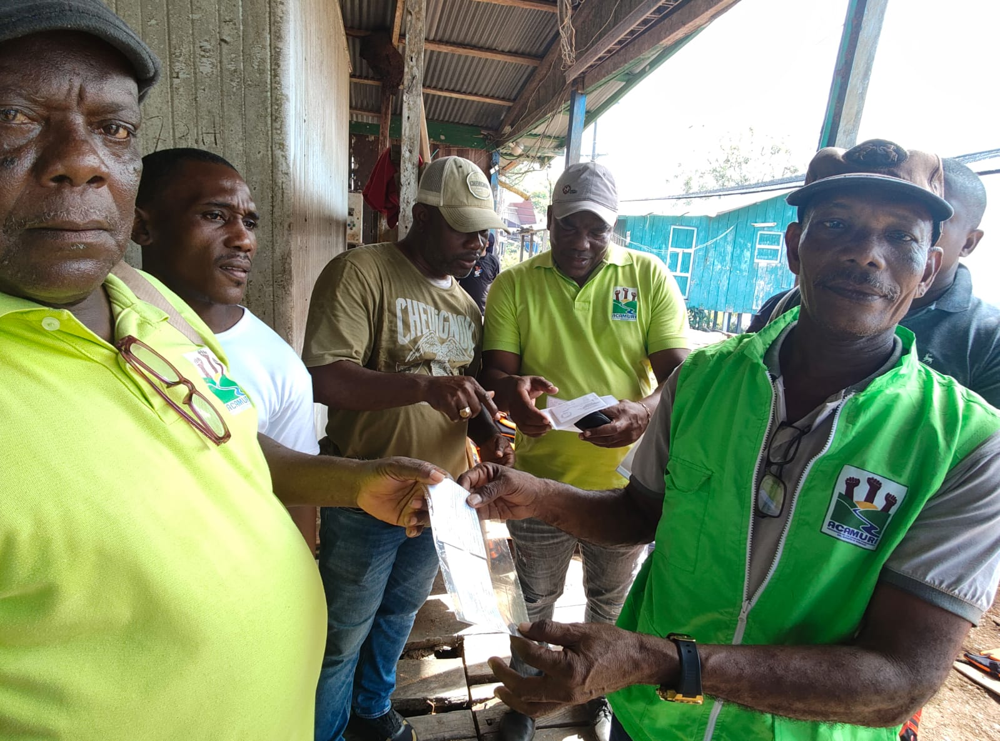
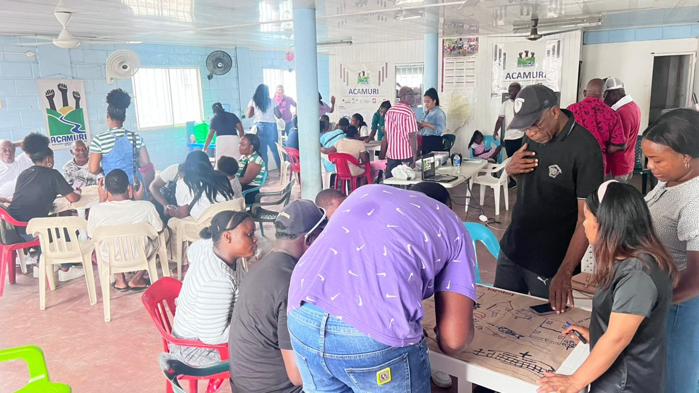
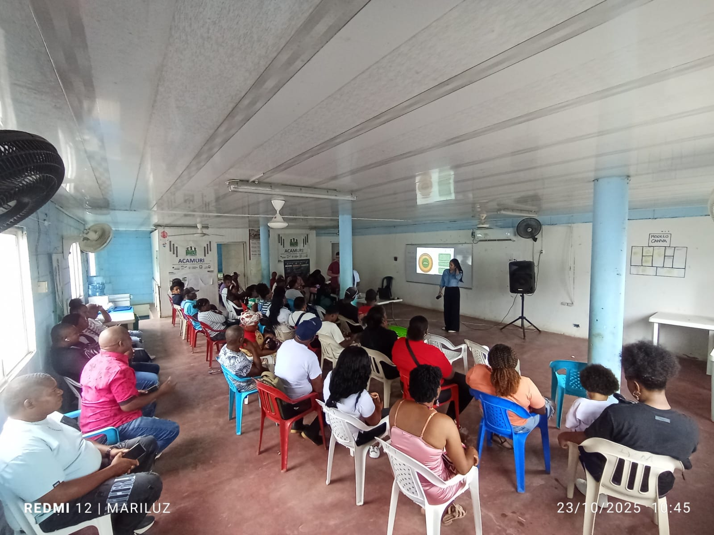
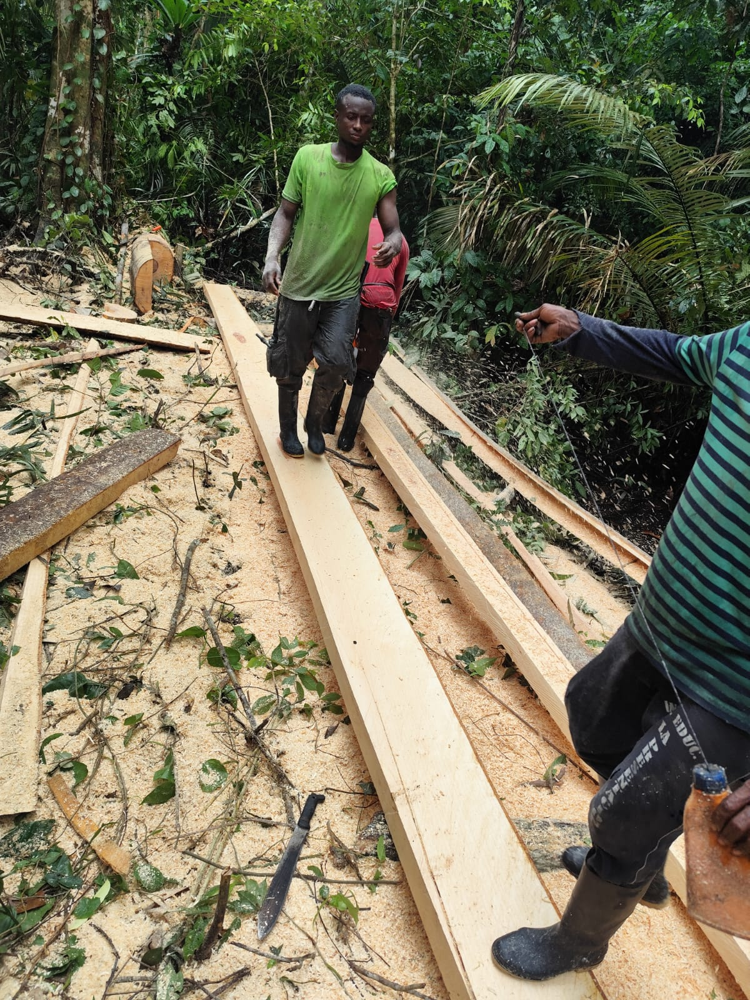
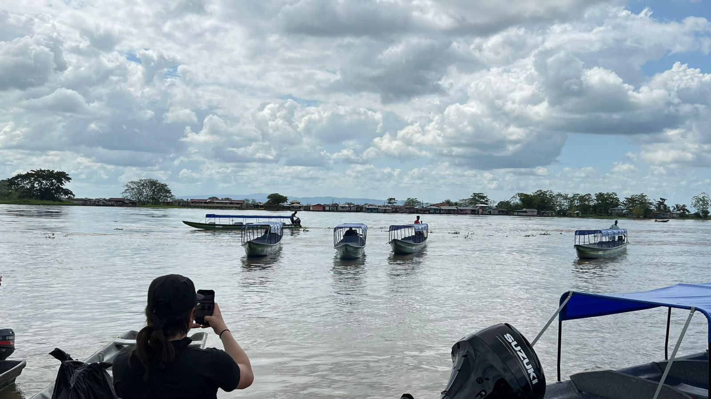
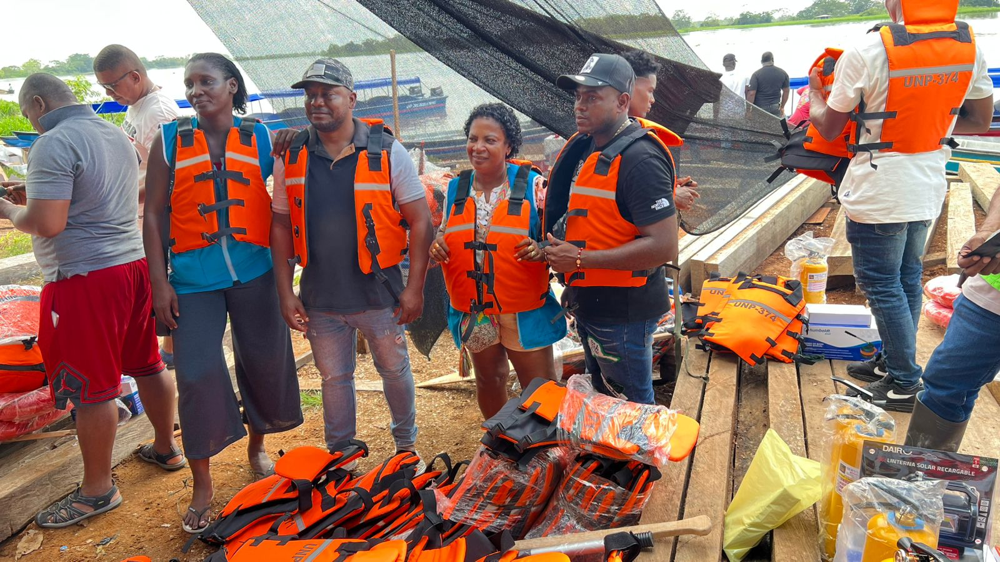
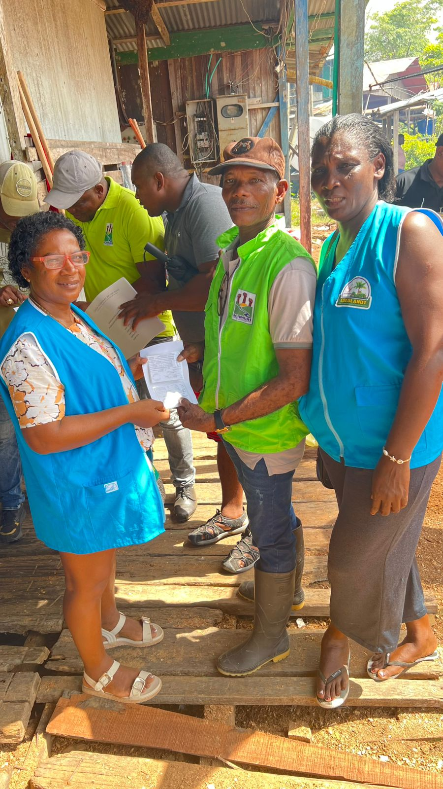
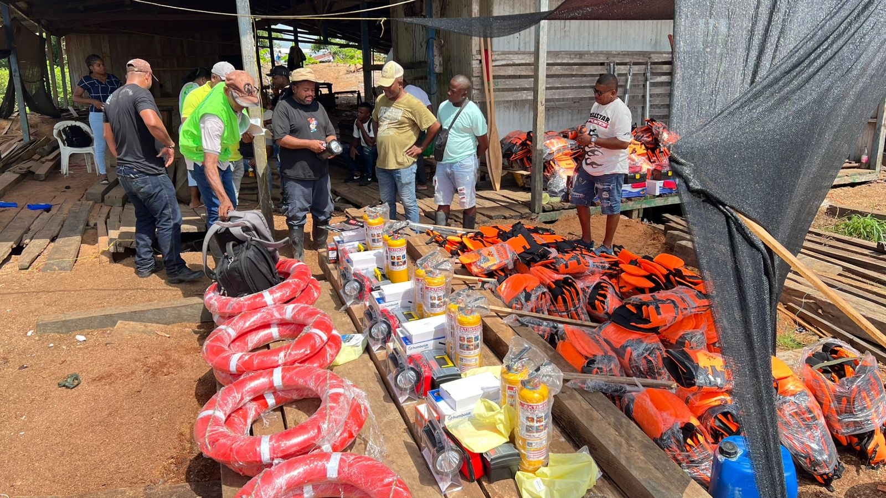
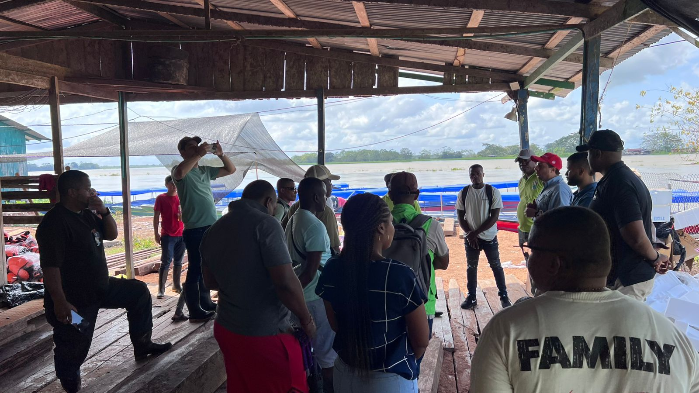
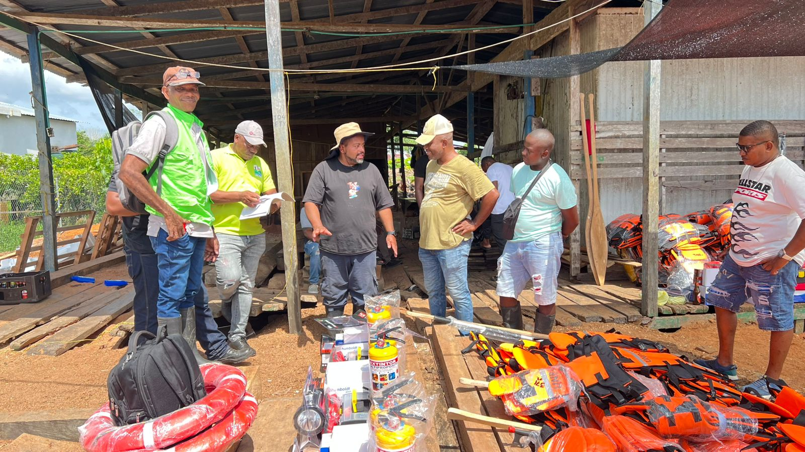
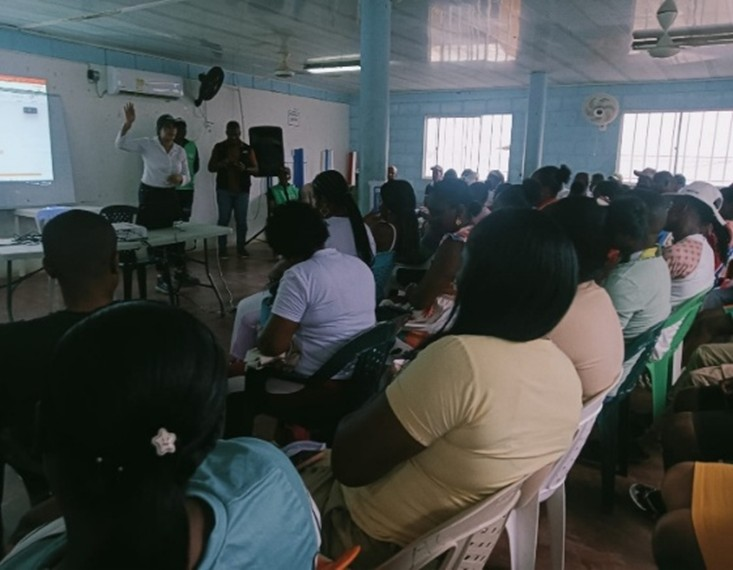
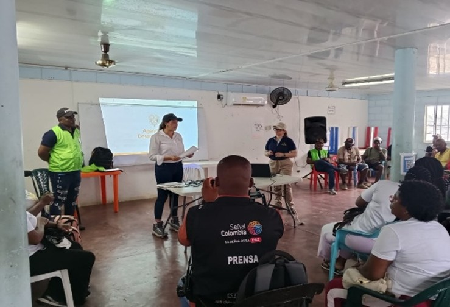
Documentos Institucionales
Contactos
Email: acamuri2021@gmail.com
Teléfono: 3127045253 - 3205617143
Colombia